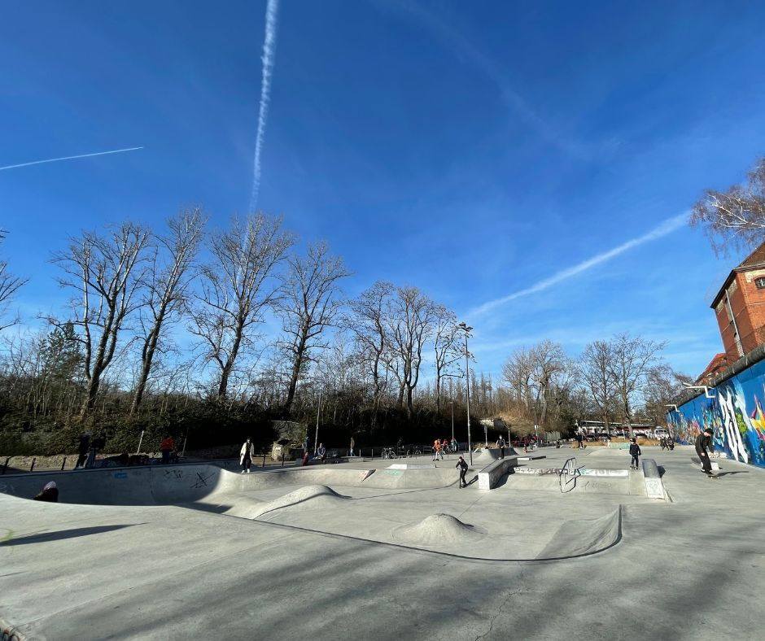
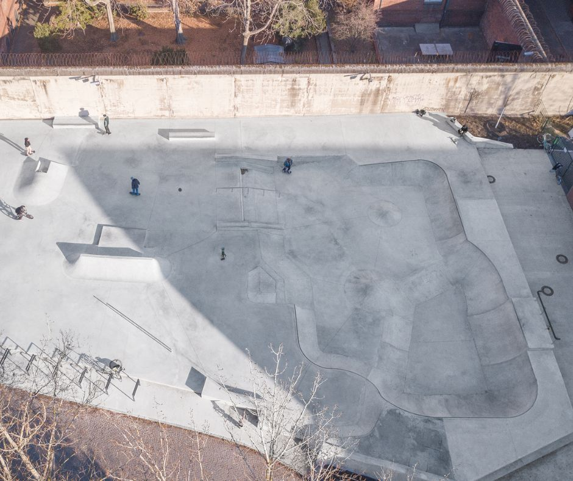
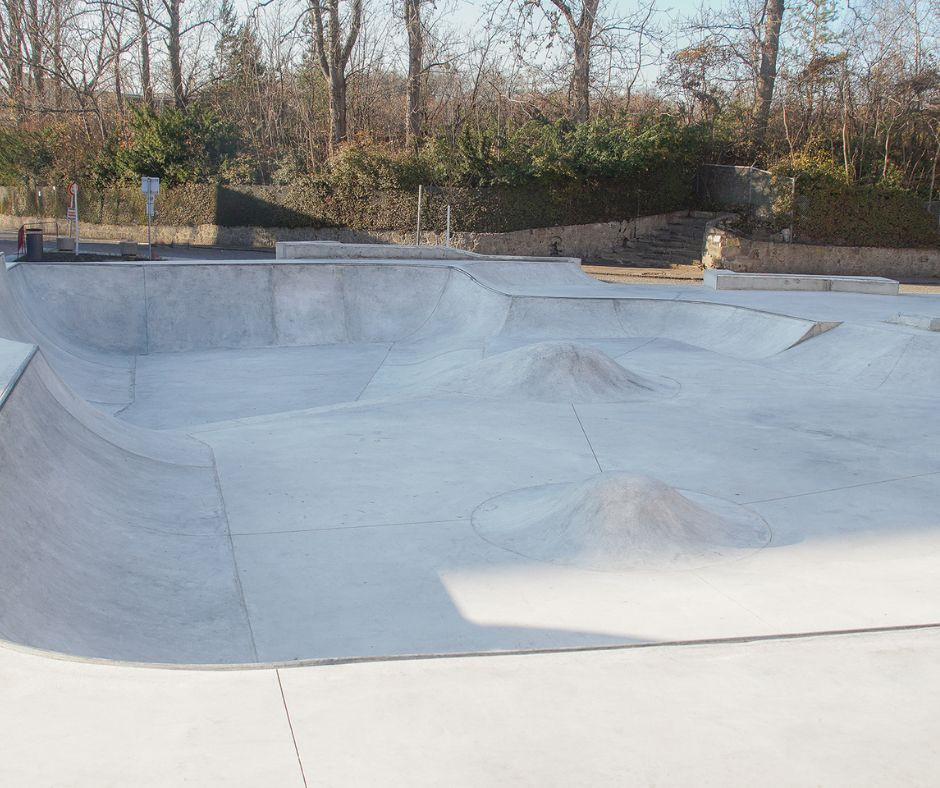
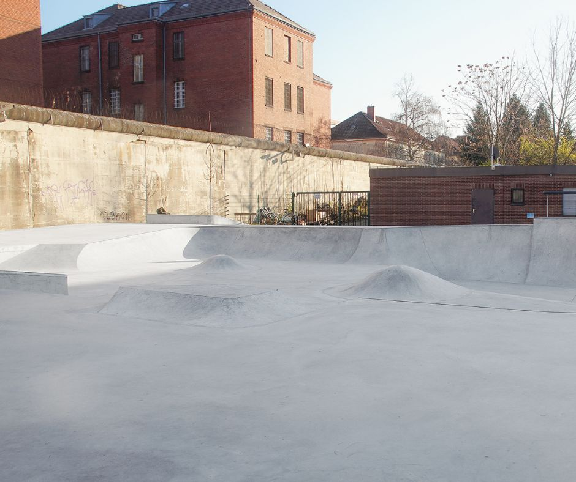
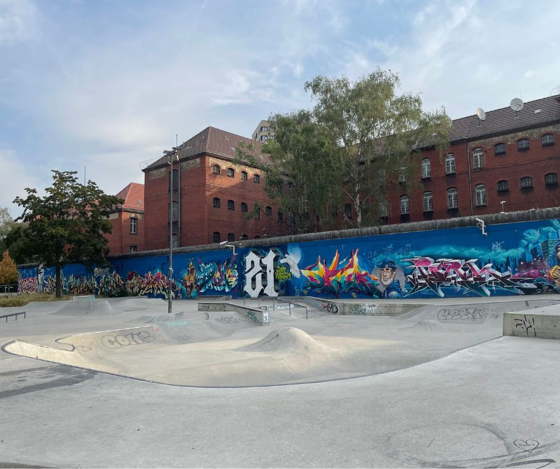
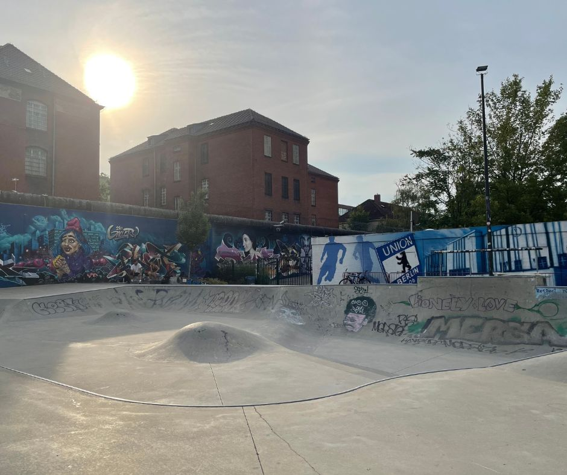
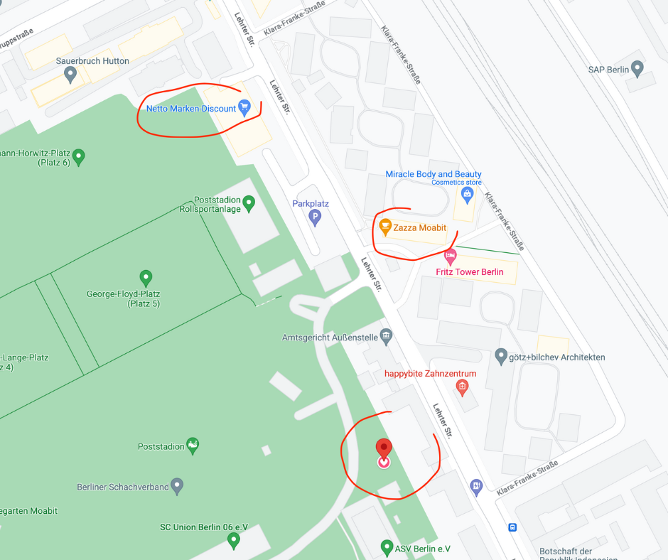
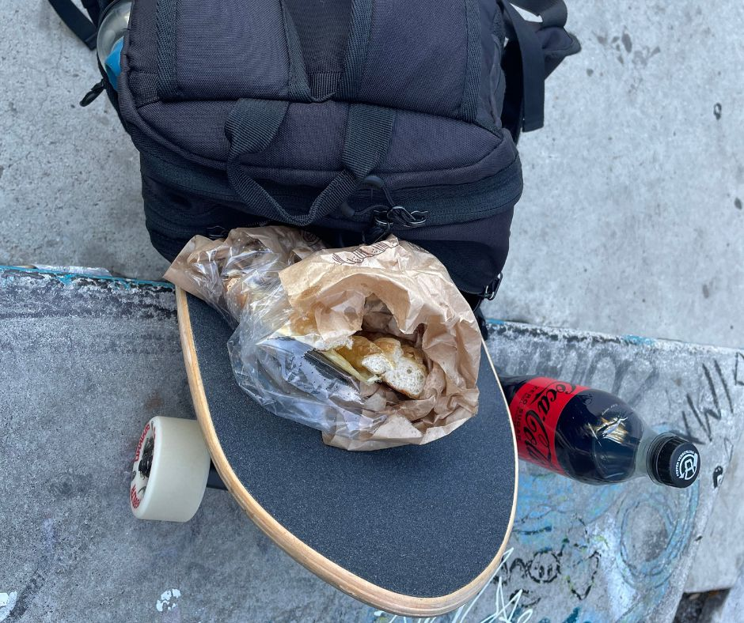
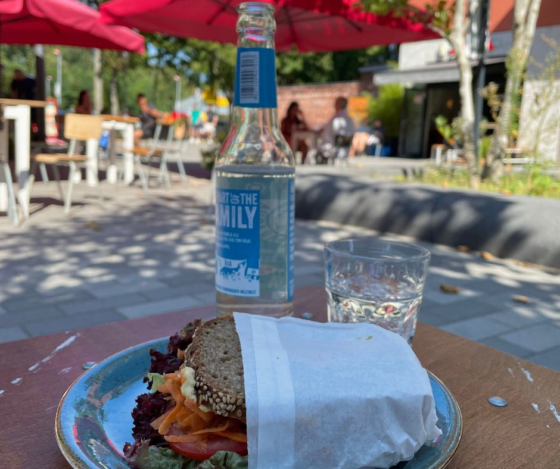

Skatepark Poststadion Berlin - Germany

Opened in 2017, the Skatepark inside Poststadion Berlin offers a combination of a bowl and a street section. The bowl comes equipped with coping, and its height varies, allowing you to gradually increase the challenge from a small drop-in on the quarter pipe to bigger drop-ins on the opposite side. In addition to this, the bowl features two roll-ins, so you can safely build up some speed without having to drop in.
 Image (c) by Pouplär Skateparks
If you’re seeking a laid-back session in this park, it’s best to arrive early, ideally around 8 a.m., or absolutely by 9 a.m, at the latest. During weekdays, morning sessions are generally less crowded. Bear in mind, the park is extremely popular among scooter kids who enjoy taking a leap out of the bowl. As such, it tends to become super crowded in the afternoons and evenings. Finally, for evening sessions, note that the park is illuminated until 10 p.m.
This is my local skatepark and I usually get there via an e-scooter. If you ever spot me there, don’t hesitate to stop by and say hi!
📍 Location
🗺️ Skatepark Poststadion, Lehrter Str. 59, 10557 Berlin, Germany
Suburb: Mitte
🔗 Google Maps: Skatepark Poststadion Berlin
🚌 Public transport: Bus stop Poststadion
🌐 Social Media
- 🕸️ Populär Skateparks Poststadion Berlin
- 🎥 YouTube Shorts: Me rolling into the bowl
- TODO: POV ride GoPro YouTube
- TODO: drop ins and bowl riding
🥣 Bowl
The park’s bowl is uniquely designed with both coping and non-coping areas, making it an ideal spot to hone your roll-in skills.
The following two images are (c) by Pouplär Skateparks:  
The following images, captured by me in 2022 and 2023, showcase the recent addition of a striking blue graffiti on the big wall.
 
🌲 Area & Necessities
The Skatepark is part of a larger sports complex named Poststadion, which also houses a calisthenics park and football fields. Conveniently, the facility includes on-site toilets, and a cafe is situated nearby.

If you venture down Lehrter Str, you’ll find a range of restaurants. Plus, it’s conveniently located near the Berlin main train station, making it easily accessible.
A Netto supermarket is also close by for whenever you need to grab some food and drinks. However, please note that parking can be quite challenging over the weekends due to the many football games that take place.
 